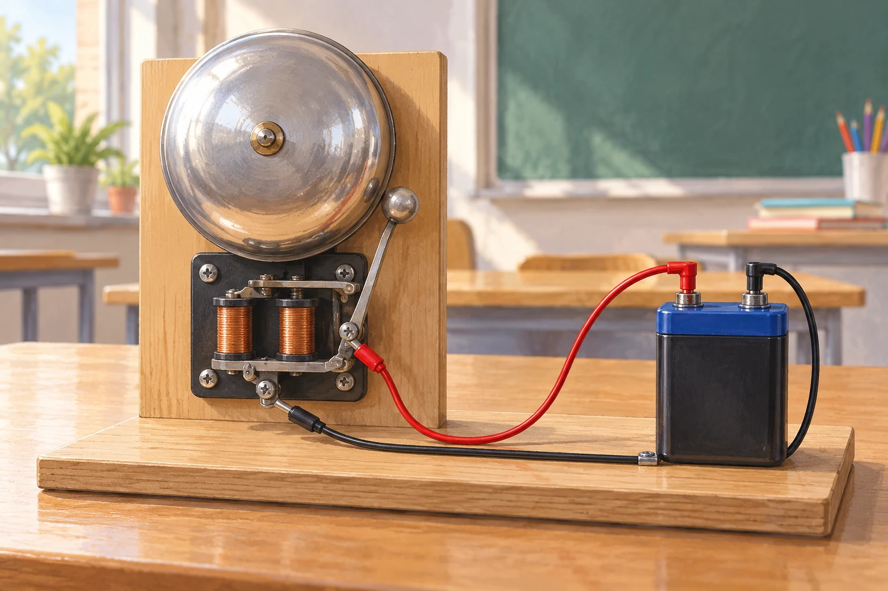

Zusatzaufgaben · Physik
Fermi-Aufgaben · Elektrodynamik und Energieübertragung
Wählt eine Aufgabe und entwickelt euren eigenen Lösungsweg.

Aufgabe 23 · Q1 GK
Wie viele Elektronen fließen beim Läuten der Schulglocke?
Eine mit Gleichstrom betriebene Schulglocke läutet drei Sekunden lang. Wie viele Elektronen passieren in dieser Zeit ungefähr einen Querschnitt ihrer Zuleitung?
Aufgabe 24 · Q2 GK
Elektrische Energie aus einem Fahrraddynamo
Auf einer 20-minütigen Fahrt zur Schule versorgt ein Fahrraddynamo die eingeschaltete Fahrradbeleuchtung. Wie viel elektrische Energie liefert er in dieser Zeit ungefähr?